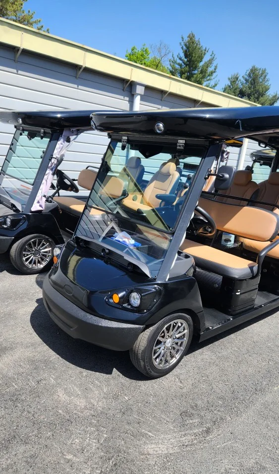
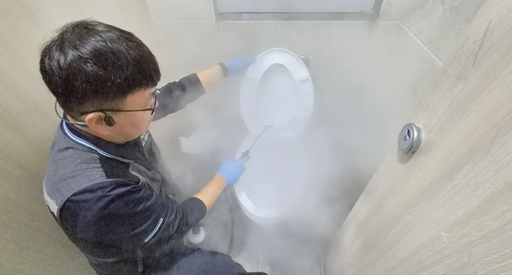

카페트청소
카페트에 쌓인 먼지와 얼룩을 장비로 관리합니다.


사무실, 관공서, 학교처럼 매일 사람이 드나드는 곳은한 번의 대청소보다 꾸준한 관리가 중요합니다.
정해진 주기로 방문해 바닥과 화장실, 계단, 분리수거까지 공간 전체를 관리합니다. 카페트와 바닥왁스처럼 장비가 필요한 작업과 골프장카트 청소, 인력파견근무도 함께 상담합니다.
카페트에 쌓인 먼지와 얼룩을 장비로 관리합니다.
기존 오염을 걷어낸 뒤 왁스를 입혀 바닥을 보호하고 광택을 살립니다.


골프장 카트 안팎을 청소합니다. 물을 뿌리는 세차가 아니라 손으로 닦아 정리하는 청소입니다.


정해진 요일과 시간에 방문해 바닥과 화장실, 공용 공간을 정리합니다.

민원인이 드나드는 관공서 공간을 업무에 방해되지 않도록 관리합니다.


교실과 복도, 특별실처럼 학생이 쓰는 공간을 정기적으로 청소합니다.


화장실 전용 걸레와 도구를 따로 써서 변기, 세면대, 바닥을 위생적으로 관리합니다.

상주 청소 인력이 필요한 사업장에 근무 인력을 파견합니다. 근무 시간과 범위는 상담 후 정합니다.
사진 없음 · 상담 후 진행
계단과 난간, 손잡이처럼 손이 자주 닿는 곳을 함께 닦습니다.

정기청소와 함께 쓰레기와 재활용품을 분류해 정리합니다.
사진 없음 · 정기청소와 함께 진행
월 4주를 기준으로 주차별 청소 방식을 달리하여 체계적으로 관리합니다.
바닥, 화장실, 쓰레기처럼 매번 챙겨야 하는 기본 청소를 합니다.
기본 청소에 더해 주차마다 집중하는 부분을 달리합니다.
네 주가 지나면 공간 전체를 한 번씩 꼼꼼히 살피게 됩니다.
주차별 구성은 공간을 보고 상담한 뒤 함께 정합니다.
사무실용과 화장실용 걸레를 구분하고, 정리된 청소 매뉴얼에 따라 작업합니다.